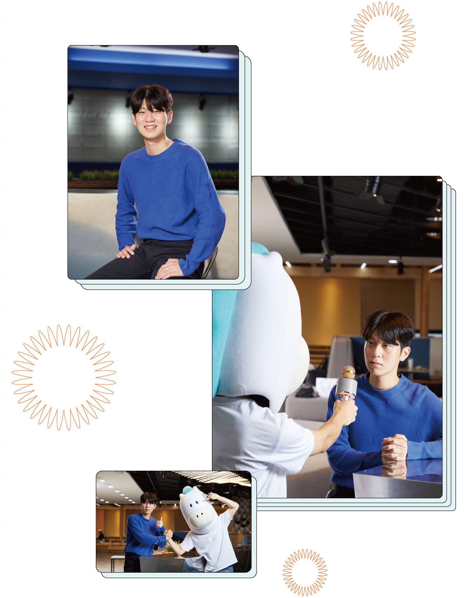

교과별 가중치를 꼭 확인하세요
벤처중소기업학과 22학번
박정진
이번에는 학생부우수전형으로 합격한 벤처중소기업학과 22학번 박정진 학생을 만났습니다. 박정진 학생은 평소 자신의 과목 성적을 잘 살펴 그에 적합한 전형을 선택하고, 내신 관리에 힘쓰며 수능공부 또한 성실하게 해 온 것이 합격의 비결임을 전했습니다.
Q. 학생부우수자전형을 택한 이유는 무엇이었나요?
3년간 쌓아온 성적을 바탕으로 수능 최저학력 기준만 충족하면 됐기 때문에 저에게 유리한 전형이라고 생각했습니다. 특히 22학년도 학생부우수자전형은 수능 최저학력 기준에 영어가 아닌 사회탐구가 반영되어서 영어보다 사회탐구 성적이 괜찮은 편이었던 저에게 적합했습니다. 내신에서는 국어 성적이 좋았기 때문에 과목별 가중치를 고려했을 때 유리하다고 판단해 이 전형을 선택했습니다.
Q. 학생부우수자전형을 위해 수험생 시절 중점을 두고 준비하고 노력한 것은 무엇인가요?
3학년 1학기가 끝날 무렵 학생부우수자전형을 알게 되면서부터 준비했습니다. 내신 성적이 가장 중요하기 때문에 교과 공부에 항상 충실해 왔습니다. 입시에 반영되는 내신이 모두 산출되고 3학년 1학기 기말고사가 끝난 뒤로는 수능 중심으로 공부했습니다. 평소에는 수능 공부를 하고 내신 시험 2, 3주 전부터 수능은 감각을 잃지 않을 정도로 공부하면서 시험 공부에 시간을 투자했습니다. 학생부우수자전형은 수시 전형이긴 하지만 수능 성적도 중요합니다. 왜냐하면 수능 최저학력 기준을 맞추지 못해 불합격하는 학생들 이 꽤 많기 때문입니다. 그래서 수능 시험 공부도 소홀히 하지 않았습니다.
Q. 입시를 준비하며 가장 어려웠던 부분은 무엇이었나요?
평소 영어 성적 관리에 어려움을 겪었습니다. 정시로 대학을 가야할 수도 있었기 때문에 영어 성적에 기복이 있다는 것이 스트레스가 되었습니다. 숭실대 학생부우수자전형의 수능 최저학력 기준에 영어가 반영되지 않아서 결과적으로는 다행이었지만요.
Q. 예비 후배들에게 한 말씀 부탁드립니다.
입시를 준비할 때 저는 항상 속으로 ‘이건 별거 아니다’라는 마음으로 긴장을 하지 않으려 노력했습니다. 예비 후배님들도 너무 긴장하지 말고 편안한 마음으로 끝까지 최선을 다하시길 바랍니다. 많이 지치실 텐데 조금만 더 힘을 내셔서 내년에 꼭 선후배로 만났으면 좋겠습니다.
박정진 학생의합격 포인트 3
1. 전형별 교과 가중치 확인
2. 내신과 수능 공부의 적절한 시간 배분
3. 편안한 마음으로 공부하기